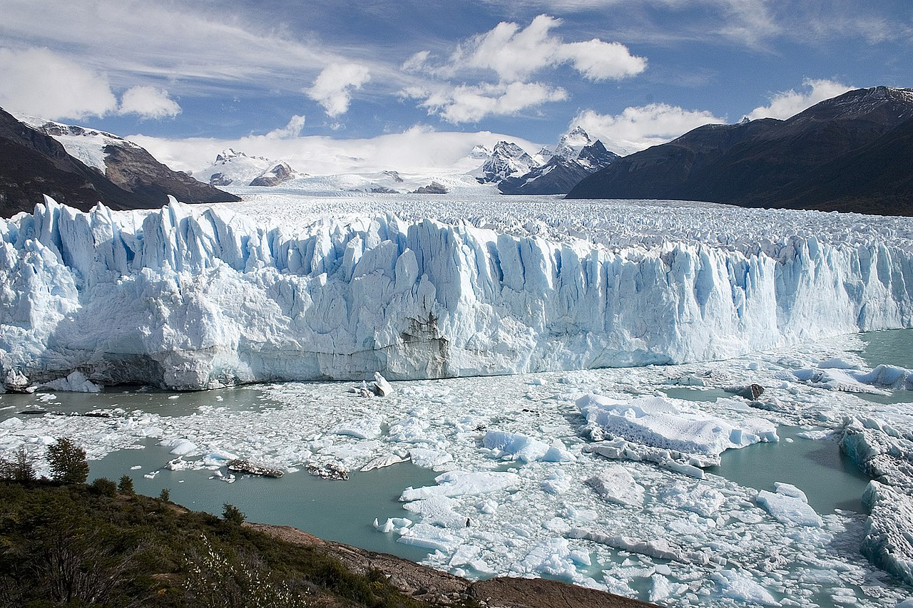

South America is a continent entirely in the Western Hemisphere[note 6] and mostly in the Southern Hemisphere, with a relatively small portion in the Northern Hemisphere. It can also be described as the southern subcontinent of the Americas. The reference to South America instead of other regions (like Latin America or the Southern Cone) has increased in recent decades due to changing geopolitical dynamics (in particular, the rise of Brazil).[6][additional citation(s) needed]
South America is bordered on the west by the Pacific Ocean and on the north and east by the Atlantic Ocean, North America and the Caribbean Sea lie to the northwest. The continent generally includes twelve sovereign states: Argentina, Bolivia, Brazil, Chile, Colombia, Ecuador, Guyana, Paraguay, Peru, Suriname, Uruguay, and Venezuela; two dependent territories: the Falkland Islands and South Georgia and the South Sandwich Islands;[note 7] and one internal territory: French Guiana.[note 8] In addition, the ABC islands of the Kingdom of the Netherlands, Ascension Island (dependency of Saint Helena, Ascension and Tristan da Cunha, a British Overseas Territory), Bouvet Island (dependency of Norway), Panama, and Trinidad and Tobago may also be considered parts of South America.
South America has an area of 17,840,000 square kilometers (6,890,000 sq mi). Its population as of 2018 has been estimated at more than 423 million.[1][2] South America ranks fourth in area (after Asia, Africa, and North America) and fifth in population (after Asia, Africa, Europe, and North America). Brazil is by far the most populous South American country, with more than half of the continent's population, followed by Colombia, Argentina, Venezuela and Peru. In recent decades, Brazil has also generated half of the continent's GDP and has become the continent's first regional power.[6]
Most of the population lives near the continent's western or eastern coasts while the interior and the far south are sparsely populated. The geography of western South America is dominated by the Andes mountains; in contrast, the eastern part contains both highland regions and vast lowlands where rivers such as the Amazon, Orinoco, and Paraná flow. Most of the continent lies in the tropics, except for a large part of the Southern Cone located in the middle latitudes.
The continent's cultural and ethnic outlook has its origin with the interaction of indigenous peoples with European conquerors and immigrants and, more locally, with African slaves. Given a long history of colonialism, the overwhelming majority of South Americans speak Portuguese or Spanish, and societies and states reflect Western traditions. Relative to Europe, Asia and Africa, 20th-century South America has been a peaceful continent with few wars.[7]
Rio de Janeiro (/ˈriːoʊ di ʒəˈnɛəroʊ, - deɪ -, - də -/; Portuguese: [ˈχiʊ̯ d(ʒi) ʒɐˈnejɾu] (About this soundlisten);[4]), or simply Rio,[5] is the second-most populous city in Brazil and the sixth-most populous in the Americas. Rio de Janeiro is the capital of the state of Rio de Janeiro, Brazil's third-most populous state, after São Paulo and Minas Gerais. Part of the city has been designated as a World Heritage Site, named "Rio de Janeiro: Carioca Landscapes between the Mountain and the Sea", by UNESCO on 1 July 2012 as a Cultural Landscape.[6]
Founded in 1565 by the Portuguese, the city was initially the seat of the Captaincy of Rio de Janeiro, a domain of the Portuguese Empire. Later, in 1763, it became the capital of the State of Brazil, a state of the Portuguese Empire. In 1808, when the Portuguese Royal Court transferred itself from Portugal to Brazil, Rio de Janeiro became the chosen seat of the court of Queen Maria I of Portugal, who subsequently, in 1815, under the leadership of her son, the prince regent, and future King João VI of Portugal, raised Brazil to the dignity of a kingdom, within the United Kingdom of Portugal, Brazil, and Algarves. Rio stayed the capital of the pluricontinental Lusitanian monarchy until 1822, when the War of Brazilian Independence began. This is one of the few instances in history that the capital of a colonizing country officially shifted to a city in one of its colonies. Rio de Janeiro subsequently served as the capital of the independent monarchy, the Empire of Brazil, until 1889, and then the capital of a republican Brazil until 1960 when the capital was transferred to Brasília.

Perito Moreno Glacier
The Perito Moreno Glacier (Spanish: Glaciar Perito Moreno) is a glacier located in the Los Glaciares National Park in southwest Santa Cruz Province, Argentina. It is one of the most important tourist attractions in the Argentinian Patagonia.
The 250 km2 (97 sq mi) ice formation, 30 km (19 mi) in length, is one of 48 glaciers fed by the Southern Patagonian Ice Field located in the Andes system shared with Chile. This ice field is the world's third largest reserve of fresh water.
The Perito Moreno Glacier, located 78 kilometres (48 mi) from El Calafate, was named after the explorer Francisco Moreno, a pioneer who studied the region in the 19th century and played a major role in defending the territory of Argentina in the conflict surrounding the international border dispute with Chile.
Amazon rainforest
The Amazon rainforest, alternatively, the Amazon jungle[a] or Amazonia, is a moist broadleaf tropical rainforest in the Amazon biome that covers most of the Amazon basin of South America. This basin encompasses 7,000,000 km2 (2,700,000 sq mi), of which 5,500,000 km2 (2,100,000 sq mi) are covered by the rainforest. This region includes territory belonging to nine nations and 3,344 formally acknowledged indigenous territories.
The majority of the forest is contained within Brazil, with 60% of the rainforest, followed by Peru with 13%, Colombia with 10%, and with minor amounts in Bolivia, Ecuador, French Guiana, Guyana, Suriname, and Venezuela. Four nations have "Amazonas" as the name of one of their first-level administrative regions, and France uses the name "Guiana Amazonian Park" for its rainforest protected area. The Amazon represents over half of the planet's remaining rainforests,[2] and comprises the largest and most biodiverse tract of tropical rainforest in the world, with an estimated 390 billion individual trees divided into 16,000 species.[3]
More than 30 million people of 350 different ethnic groups live in the Amazon, which are subdivided into 9 different national political systems and 3,344 formally acknowledged indigenous territories. Indigenous peoples make up 9% of the total population with 60 of the groups remaining largely isolated.
Torres del Paine National Park
Torres del Paine National Park (Spanish: Parque Nacional Torres del Paine)[3] is a national park encompassing mountains, glaciers, lakes, and rivers in southern Chilean Patagonia. The Cordillera del Paine is the centerpiece of the park. It lies in a transition area between the Magellanic subpolar forests and the Patagonian Steppes. The park is located 112 km (70 mi) north of Puerto Natales and 312 km (194 mi) north of Punta Arenas. The park borders Bernardo O'Higgins National Park to the west and the Los Glaciares National Park to the north in Argentine territory. Paine means "blue" in the native Tehuelche (Aonikenk) language and is pronounced PIE-nay, while Torres means "towers".[4]
Torres del Paine National Park is part of the Sistema Nacional de Áreas Silvestres Protegidas del Estado de Chile (National System of Protected Forested Areas of Chile). In 2013, it measured approximately 181,414 hectares.[1] It is one of the largest and most visited parks in Chile. The park averages around 252,000 visitors a year, of which 54% are foreign tourists,[2] who come from many countries all over the world. It is also part of the End of the World Route, a tourist scenic route.
The park is one of the 11 protected areas of the Magallanes Region and Chilean Antarctica (together with four national parks, three national reserves, and three national monuments). Together, the protected forested areas comprise about 51% of the land of the region (6,728,744 hectares).
Iguazu Falls
Iguazú Falls or Iguaçu Falls (Guarani: Chororõ Yguasu [ɕoɾo'ɾõ ɨɣʷa'su], Spanish: Cataratas del Iguazú [kataˈɾatas del iɣwaˈsu]; Portuguese: Cataratas do Iguaçu [kataˈɾatɐs du iɡwaˈsu]) are waterfalls of the Iguazu River on the border of the Argentine province of Misiones and the Brazilian state of Paraná. Together, they make up the largest waterfall in the world.[2] The falls divide the river into the upper and lower Iguazu. The Iguazu River rises near the heart of the city of Curitiba. For most of its course, the river flows through Brazil; however, most of the falls are on the Argentine side. Below its confluence with the San Antonio River, the Iguazu River forms the border between Argentina and Brazil.
The name Iguazú comes from the Guarani or Tupi words "y" [ɨ], meaning "water", and "ûasú "[waˈsu], meaning "big".[3] Legend has it that a deity planned to marry a beautiful woman named Naipí, who fled with her mortal lover Tarobá in a canoe. In a rage, the deity sliced the river, creating the waterfalls and condemning the lovers to an eternal fall.[3] The first European to record the existence of the falls was the Spanish Conquistador Álvar Núñez Cabeza de Vaca in 1541.
.jpeg)